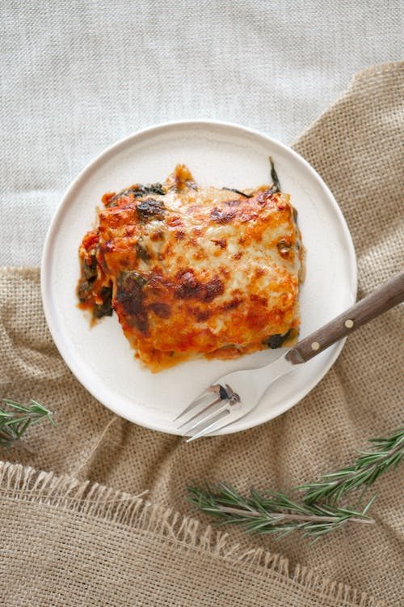

Lasagna

Description
Lasagna is a delicious Italian dish made by layering flat pasta sheets
with rich tomato sauce, creamy cheese, and savory fillings, then baking it
to perfection. It's a comforting and hearty culinary delight enjoyed by
many around the world.
Ingredients
- Lasagna noodles or pasta sheets
- Ground meat (such as beef, pork, or a combination)
- Onion and garlic (for flavor)
- Tomato sauce or marinara sauce
- Ricotta cheese
- Mozzarella cheese (shredded)
- Parmesan cheese (grated)
- Eggs (to bind the ricotta cheese)
- Fresh or dried herbs (such as basil, oregano, or parsley)
- Salt and pepper (to taste)
- Olive oil (for cooking)
-
Optional: vegetables (such as spinach or zucchini) or additional
fillings (like mushrooms or sausage)
Steps
- Preheat oven. Boil and cook lasagna noodles. Drain.
-
Sauté onions and garlic in olive oil. Add ground meat, cook until
browned. Drain fat.
-
Add tomato sauce, herbs, salt, and pepper. Simmer for 10-15 minutes.
- Mix ricotta cheese, Parmesan cheese, and beaten eggs in a bowl.
-
Layer sauce, noodles, ricotta mixture, and shredded mozzarella in a
baking dish.
- Cover with foil and bake for 25-30 minutes.
-
Remove foil and bake for an additional 10-15 minutes until golden.
-
Rest for a few minutes. Serve hot, garnished with cheese and herbs.